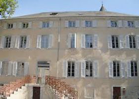
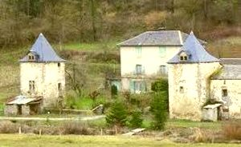
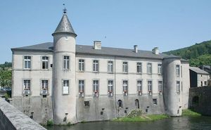
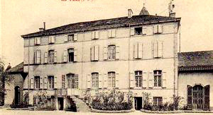
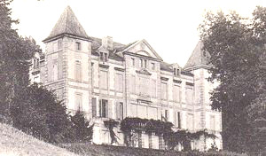
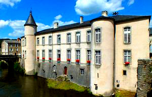
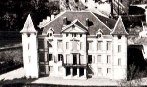

Recensement Jean-Claude Truffet
| Département | 81 — Tarn |
| Canton | Lacaune-Brassac |
| Commune | Castelnau de Brassac |
| Type d'édifice | Château |
| Période d'origine | XIX |







Trois châteaux à Brassac celui de Belfortes du XIIIe-XIXe siècle et celui de Brassac de Castelnau du XVII-XXe siècle devenu maison commune et le château de la Barbazanie aux environs de Brassac. BRASSAC Bonnéry, subsiste un pont médiéval et deux châteaux.
Brassac de Belfortés a absorbé Brassac-de-Castelnau entre 1790 et 1794. La commune fusionnée a pris le nom de Brassac. La ville se développe au XIXe siècle grâce au textile. Il figure en 1371 dans le dénombrement que fit Catherine de Vendôme de la lignée des Comtes de Castres. Guilhaume Imbert était à cette époque Seigneur de Brassac de Castelnau (rive droite), tandis que Brassac de Belfortès était au nombre des possessions d'Amblard de Soubiran. Cette dernière famille fut une des plus importante avec celle de La Palu et des de Juge dans l'histoire de Brassac.
Au moment des guerres de religions, elle fournit d'importantes personnalités protestantes du Castrais. En 1476, lorsque Boffile de Juge fut substitué à Jacques d'Armagnac par Louis XI, nous voyons apparaître les délégués des Seigneurs de Brassac de Castelnau et de Belfortès au couvent des Jacobins de Castres pour prêter serment à leur nouveau suzerain. La période de 1555 à 1610 fut essentiellement troublée par les rivalités religieuses. La tolérance n'était admise d'aucun côté et notre région en fut particulièrement affectée. Les luttes civiles commencèrent vers 1561 et durèrent toutes la moitié du XVIe siècle jusqu'au début de XVIIe siècle. Une paix relative s'installa ensuite. En 1824 est fondé à Oulias, sur le territoire la commune de Castelnau-de-Brassac, un couvent de l'institut des surs de Saint-Joseph. Elles y tiendront une école de filles, pensionnat et école d'enseignement ménagers. Les dernières surs quitteront les lieux en 1992. Louis Cavaillès (mécanicien de Jean Mermoz), né à Castelnau-de-Brassac. Louis-Abel Fontenai de Bonafous, dit abbé de Fontenay (1736-1806), journaliste et compilateur, né à Castelnau-de-Brassac. BARBAZANIE, la famille des Corbière de Valès possédait le château de la Barbazanie au début du XIXe siècle.
Brassac mène sa vie tranquille et saine en pleine nature. Sur chaque rive un château médiéval a résisté au temps. De plan rectangulaire à trois niveaux et attiques, flanqué d'une tour ronde à toit pointu dont une arasée, Si vous allez faire un tour au musée du protestantisme de Ferrières, vous retracerez toute cette histoire des guerres de religions qui reste aujourdhui intimement liée à celle du Tarn. De l'autre côté du pont le château de Brassac de Castelnau de plan barlong une dizaine de travées à deux niveaux sur un soubassement pris dans la rivière ainsi que les deux tours rondes, un toit en poivrières l'autre arasée. Barbazanie; de plan rectangulaire à huit travées de trois niveaux, toit en croupe avec lucarnes, deux tourelles carrées accolées aux angles en façade toit en poivrières à quatre pans, plein cintre en façade un pavillon en saillit avec balcon et fronton triangulaire, présente une belle façade régulière de onze travées se composant d'un corps de logis central rectangulaire flanqué de tours carrée présentant une seule travée et couronnées d'un toit en pavillon. Le centre de la façade présente un avant-corps de trois travées qui en marque l'axe. Cet avant-corps présente au niveau des combles un attique surmonté d'un fronton triangulaire auquel répondent les lucarnes rythmant l'axe central des travées réparties de part et d'autre de l'avant corps. Il en découle un jeu de volumes qui, conjugué au subtil réseau de bandeaux soulignant les étages et les travées de la façade, donnent à cette architecture, restaurée au XIXe siècle, une intéressante animation.
Famille des Corbière de Valès
"
Le château de la Marquise, de Belfortes, de Brassac hôtel de Ville et le château Barbazanie